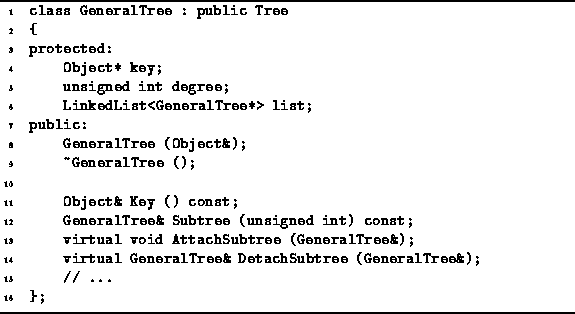

Data Structures and Algorithms
with Object-Oriented Design Patterns in C++
Data Structures and Algorithms
with Object-Oriented Design Patterns in C++
This section outlines an implementation of general trees
in the sense of Definition  .
The salient features of the definition are first,
that the nodes of a general tree have arbitrary degrees;
and second, that there is no such thing as an empty tree.
.
The salient features of the definition are first,
that the nodes of a general tree have arbitrary degrees;
and second, that there is no such thing as an empty tree.
The recursive nature of Definition has important
implications when considering the implementation of such trees as containers.
In effect, since a tree contains zero or more subtrees,
when implemented as a container,
we get a container which contains other containers!
Fortunately, we have chosen by design to implement containers
using indirect containment .
Therefore, it is possible for a tree to contain other trees
simply by keeping around pointers to those trees.
Figure shows the approach we have chosen
for implementing general trees.
This figure shows how the general tree  in Figure
can be stored in memory.
The basic idea is that each node has associated with it a linked list
of pointers to the subtrees of that node.
A linked list is used because there is no a priori restriction
on its length.
This allows each node to have an arbitrary degree.
Furthermore, since there are no empty trees,
we need not worry about representing them.
An important consequence of this is that the implementation
never makes use of a zero-valued tree node pointer!
in Figure
can be stored in memory.
The basic idea is that each node has associated with it a linked list
of pointers to the subtrees of that node.
A linked list is used because there is no a priori restriction
on its length.
This allows each node to have an arbitrary degree.
Furthermore, since there are no empty trees,
we need not worry about representing them.
An important consequence of this is that the implementation
never makes use of a zero-valued tree node pointer!

Figure: Representing General Trees using Linked Lists
Program declares the GeneralTree class
which is used to represent general trees
as specified by Definition .
The class GeneralTree is derived from
the base class Tree which is discussed in the preceding section.

Program: GeneralTree Class Definition
 Copyright © 1997 by Bruno R. Preiss, P.Eng. All rights reserved.
Copyright © 1997 by Bruno R. Preiss, P.Eng. All rights reserved.